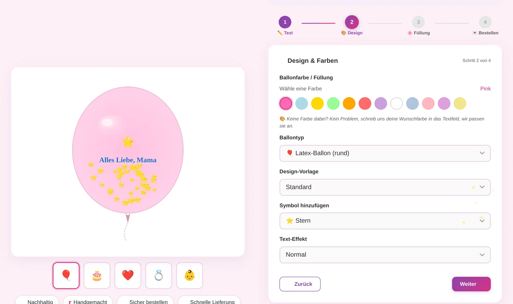
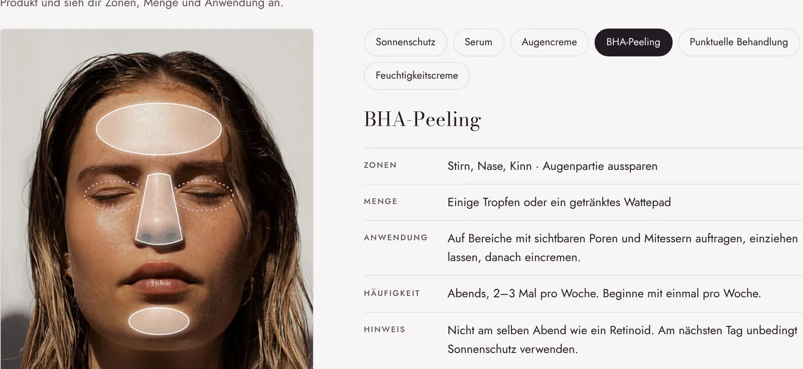
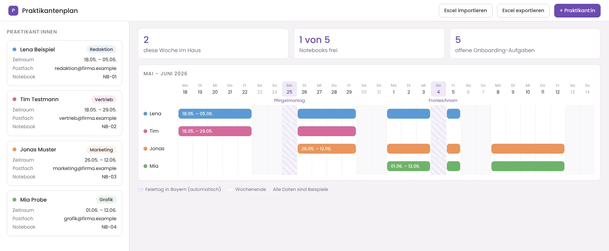
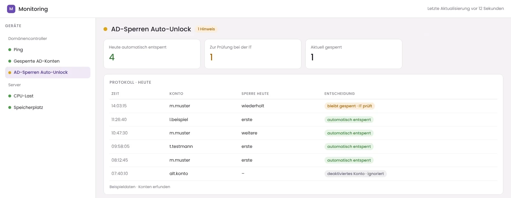

Raluca Jidvian
Ich habe als Elektroingenieurin angefangen, Systeme in der IT betreut und baue heute Weboberflächen, die Menschen gerne benutzen.
- SchaltkreiseElektroingenieurin bei Bosch
- ServerIT-Systemadministration
- InterfacesUX/UI & Frontend
Die Seele steckt im Detail.
Projekte

Dandelion 11:11: Vom Konfigurator bis zur Bestellung, selbst gebaut
ProblemBestellungen liefen über Social Media und Nachrichten. Wie man bezahlt, war unklar.
LösungEin eigener Shop mit Live-Vorschau, vier klaren Schritten und vollständig ankommenden Bestellungen.

SKIN AI: Die eigene Haut verstehen, bevor man etwas kauft
ProblemHautpflege wird nach Werbung gekauft, ohne zu wissen, ob sie zur eigenen Haut passt.
LösungEin zweisprachiger Prototyp mit Hauttest, Gesichtskarte und Kombi-Check, direkt im Browser nutzbar.

Praktikantenplanung: Alles für den ersten Tag an einem Ort
ProblemZeiträume, Postfächer und Notebooks lagen verteilt in Listen und E-Mails.
LösungEin internes Tool mit Wochenplan, Gerätevergabe, Feiertagen und Onboarding-Checkliste.

Gesperrte Konten: Hilfe, bevor jemand anrufen muss
ProblemEin Tippfehler beim Passwort hieß: Arbeit unterbrochen, IT anrufen, warten.
LösungHarmlose Sperren werden automatisch aufgehoben, auffällige bleiben bei der IT.